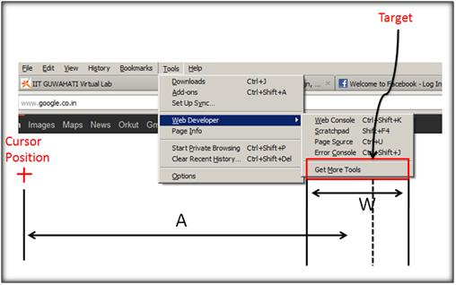
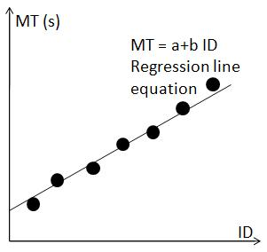
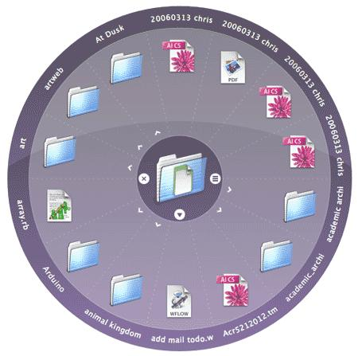

Fitts’s Law - Modeling Target Movement Time in HCI
Fitts's law is a model of speed-accuracy tradeoffs used in human–computer interaction and ergonomics. It predicts time required to acquire a target on screen as a function of the distance to the target and the size of the target. Fitts's law is used to model the act of pointing, either by physically touching an object with a hand,finger or virtually or by pointing to an object on a computer monitor using a pointing device. It was proposed by Paul Fitts in 1954.
Mathematically it can be written as
MT = a + b log 2 ( 2A / W )
MT : Movement time (average) taken to complete the movement or point the targeta : Start / Stop time of the device (y intercept)
b : Inherent speed of the device (slope of line)
W : Width of the target measured along the axis of motion, which corresponds to accuracy
A : Distance from the starting point to the center of the target
The term log 2 ( 2A / W ) is called the index of difficulty (ID). It describes the difficulty of the motor tasks. 1/b is also called the index of performance (IP)and measures the information capacity of the human motor system.
Thus MT= a+b ID = (a + ID) / IP
Physical interpretation and application of Fitts’s Law
Use of Fitts’s Law to radial menus
Supposing a designer is confronted with choosing between a linear array type of menu and a round menu in which control buttons are placed radially. Fitts law helps the designer in finding out which would be functionally more efficient and error free given the use context.
Also the advantage of radial menus can be demonstrated with Fitts’s Law. Since menus pop up at the current cursor position and all items are at same distance from the centre, they can be approximately reached at the same speed in addition pointing is enhanced as the radial slices are of infinite size and thus can be more quickly and reliably selected.
It should be noted that while Fitts’s law applies to the physical movement of the pointing devices, other human factors like search-time and decision-time for item selection, must also be taken into account when evaluating the overall performance of menu systems.

After performing this experiment
- 1.You will observe the effect of target distance and target size on the GUI target selection time.
2.You can apply fitt's law in designing and placing widgets on computer interface.
- 1.Be alert. You will see a circle displayed on the screen.
2.You will have to click on the circle the very moment it appears.
3.Once you click the first circle, another circle with random size, color and position will appear on the screen.
4.Click on this next circle too the very moment you see it.
5.Repeat steps 3 and 4 as long as circles continue to appear.(around 21 circles)
6.Finally you will see a table having data of your selection time, target distances to circle and circle dimensions.
7.Observe the graph carefully and analyse the results.

- 1.Can you see a circle displayed on the screen below?
2.Click on this circle the moment you see it.
3.Another circle with random size, color and position will appear on the screen.
4.Click on this next circle the moment you see it.
5.Repeat steps 3 and 4 as long as circles are displayed.(around 21 circles)
6.Finally you will see the recorded data of selection time , target distances and circle dimensions.
7.Observe the graph carefully and take a screenshot of the graph and the table and save it on your computer for later use as instructed under assignment tab.

- 1.What is the significance of coefficient a and b in the mathematical expression of fitts’s law?
2.What inference can you draw from the graph presented at the end of the experiment?
3.Using the interaction data of the experiment try to plot a graph of ID Vs MT and find its slope. Is the slope same for different individuals?
- 1.Using the screenshot of graph and table saved by you plot a graph with diameter of target along x-axis and corresponding selection time on y-axis. You will see an inverse relationship between the diameter of the target and the selection time.
2.Perform the same experiment using a touchpad on a laptop instead of the mouse. Will use of touchpad on the laptop increase or decrease the target selection difficulty or the slope of the line? Compare your results and graphs.
3.You can repeat the same with a touch screen if available. Compare your results and graphs.